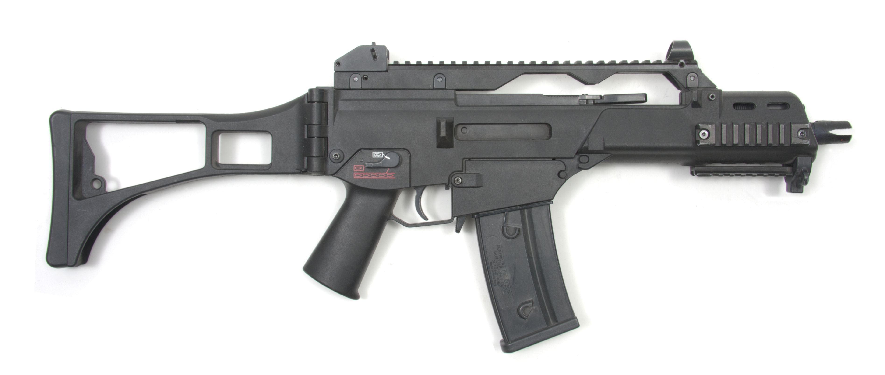

H&K G36
The Heckler & Koch G36 is a 5.56×45mm assault rifle, designed in the early 1990s by Heckler & Koch (H&K) in Germany as a replacement for the 7.62mm G3 battle rifle.[1] It was accepted into service with the Bundeswehr in 1997, replacing the G3.[2] The G36 is gas-operated and feeds from a 30-round detachable box magazine or 100-round C-Mag drum magazine.
- Range: 800 metres
- 18.9" barrell
- Capacity: 30 rounds